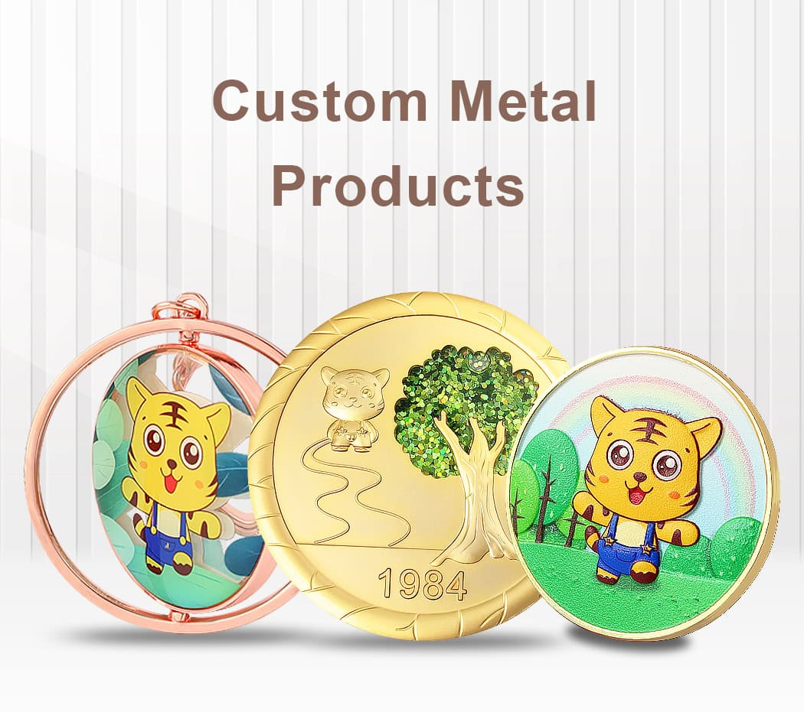
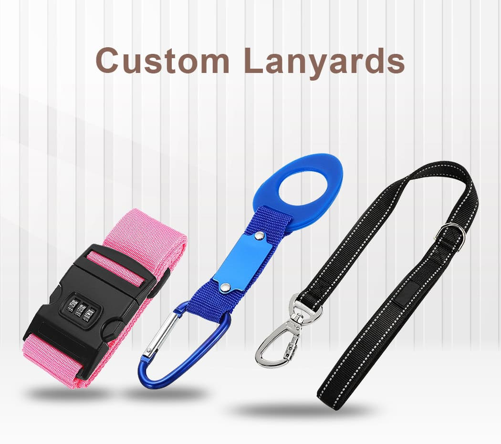
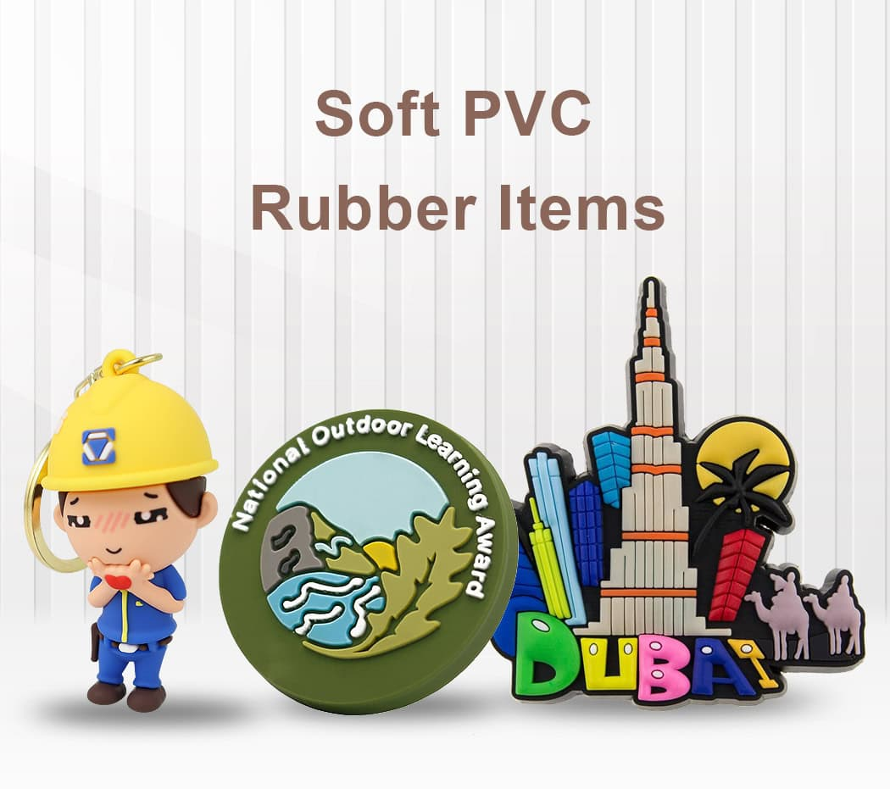
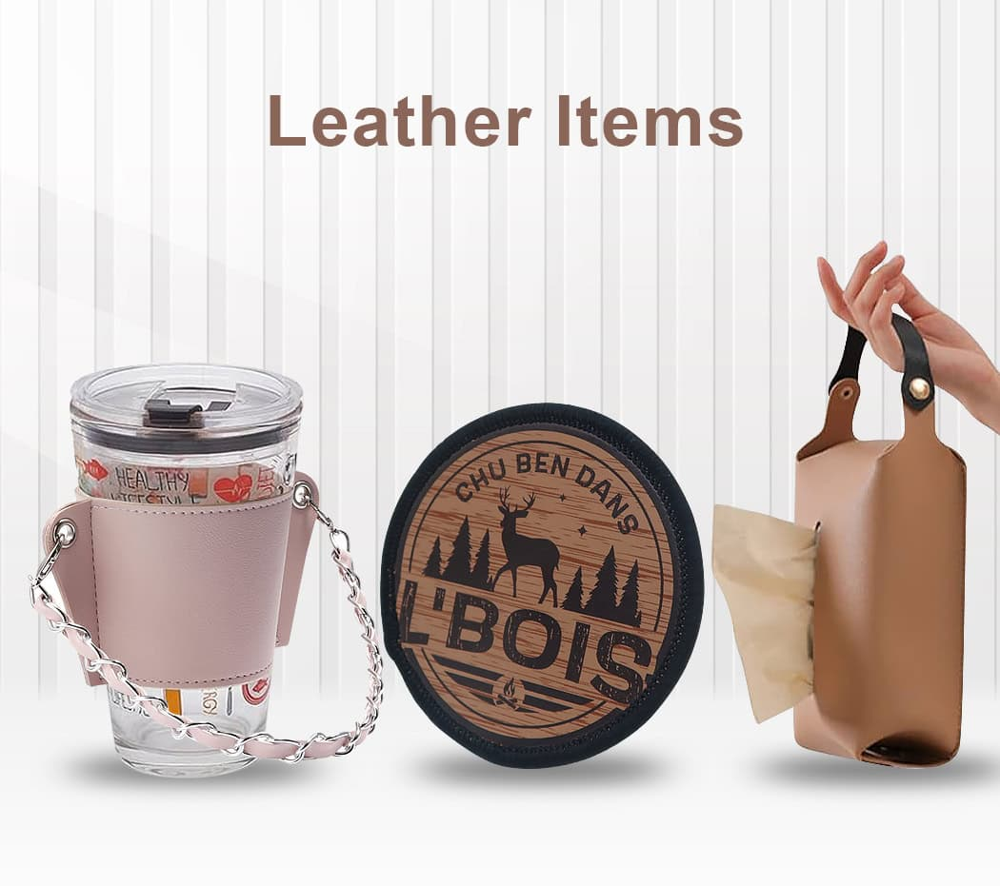
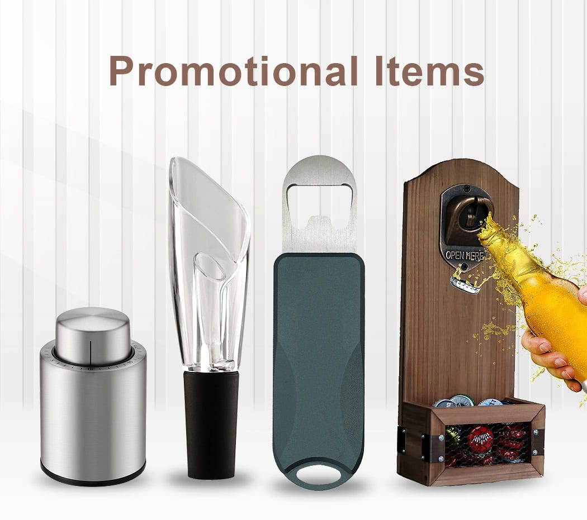
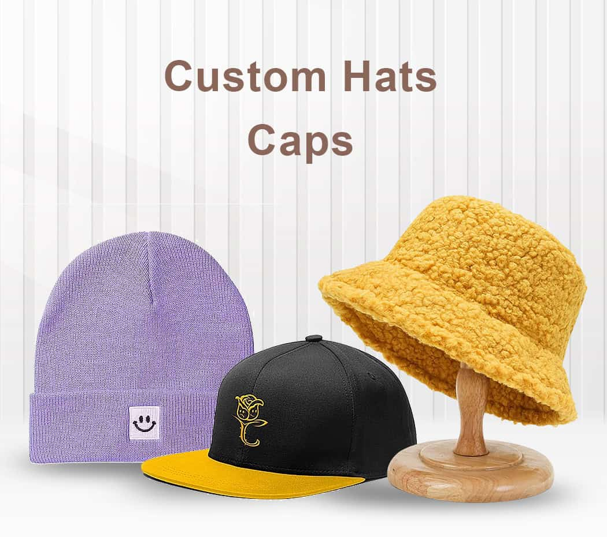

Browse by material按材质浏览Explora por materialParcourir par matériauNach Material durchsuchenSfoglia per materiale素材から探す소재별로 찾기تصفح حسب المادة

Metal Products金属制品Productos de metalProduits métalliquesMetallprodukteProdotti in metallo金属製品금속재료منتجات معدنية
Medals, coins, pins, badges, keychains, buckles and trophies in zinc alloy, brass, iron and stainless steel.锌合金、黄铜、铁与不锈钢材质的奖牌、币、徽章、钥匙扣、带扣与奖杯。Medallas, monedas y pins en aleación de zinc, latón y acero.Médailles, pièces, épingles, badges, porte-clés, boucles et trophées en alliage de zinc, laiton, fer et acier inoxydable.Medaillen, Münzen, Nadeln, Abzeichen, Schlüsselanhänger, Schnallen und Pokale aus Zinklegierung, Messing, Eisen und Edelstahl.Medaglie, monete, spille, distintivi, portachiavi, fibbie e trofei in lega di zinco, ottone, ferro e acciaio inossidabile.亜鉛合金、真鍮、鉄、ステンレス製のメダル、コイン、ピン、バッジ、キーホルダー、バックル、トロフィー。아연 합금, 황동, 철, 스테인리스로 제작한 메달, 코인, 핀, 배지, 키홀더, 버클, 트로피.ميداليات، عملات، دبابيس، شارات، حلقات مفاتيح، أبازيم وكؤوس من سبيكة الزنك والنحاس والحديد والستانلس ستيل.

Patches & Labels织唛与标签Parches y etiquetasCorrectifs et étiquettesAufnäher & EtikettenCerotti ed etichetteパッチとラベル패치 및 라벨التصحيحات والملصقات
Embroidered, woven, chenille, PVC, bullion and sequin patches plus woven garment labels.刺绣、织唛、雪尼尔、PVC、金属线与亮片徽章，以及织唛服装标签。Parches bordados, tejidos, chenilla y etiquetas.Patchs brodés, tissés, chenille, PVC, filés métalliques et pailletés, ainsi qu'étiquettes tissées pour vêtements.Gestickte, gewebte, Chenille-, PVC-, Bouillon- und Pailletten-Patches sowie gewebte Bekleidungsetiketten.Toppe ricamate, tessute, ciniglia, PVC, bullion e paillettes, oltre a etichette tessute per capi.刺繍、織り、シェニール、PVC、ブリオン、スパンコールのパッチに加え、織りネームも対応。자수, 직조, 셔닐, PVC, 불리온, 스팽글 패치와 직조 의류 라벨.رقع مطرزة، منسوجة، شنيل، PVC، خيوط معدنية وترتر، إضافة إلى ملصقات ملابس منسوجة.

Lanyards挂绳CordonesCordonsVerbindungsmittel für RückhaltesystemeLanyardランヤード랜야드الحبال
Polyester, nylon, tubular, woven, reflective and RPET lanyards with a full range of attachments.涤纶、尼龙、圆筒、织带、反光与 RPET 挂绳，配件齐全。Poliéster, nailon, tubular y RPET con todo tipo de accesorios.Tours de cou en polyester, nylon, tubulaire, tissé, réfléchissant et RPET avec une gamme complète d'accessoires.Kordeln aus Polyester, Nylon, Schlauchband, Gewebe, reflektierend und RPET mit dem gesamten Zubehörsortiment.Lanyard in poliestere, nylon, tubolare, tessuto, riflettente e RPET con una gamma completa di accessori.ポリエステル、ナイロン、チューブラー、織り、反射材、RPETのランヤードに豊富な付属パーツを組み合わせ。폴리에스터, 나일론, 튜블러, 직조, 반사, RPET 랜야드와 다양한 부자재.حبال من البوليستر والنايلون والأنبوبي والمنسوج والعاكس وRPET مع تشكيلة كاملة من الملحقات.

Soft PVC & Silicone软胶与硅胶PVC suave y siliconaPVC souple et siliconeWeich-PVC & SilikonPVC morbido e siliconeソフトPVC ＆シリコン부드러운 PVC 및 실리콘بولي كلوريد الفينيل الناعم والسيليكون
2D and 3D PVC keychains, medals and magnets, plus silicone wristbands, coasters and straps.2D/3D 软胶钥匙扣、奖牌与冰箱贴，以及硅胶腕带、杯垫与表带。Llaveros en PVC 2D/3D y pulseras de silicona.Porte-clés, médailles et aimants en PVC 2D et 3D, ainsi que bracelets, dessous de verre et sangles en silicone.2D- und 3D-PVC-Schlüsselanhänger, Medaillen und Magnete sowie Silikonarmbänder, Untersetzer und Bänder.Portachiavi, medaglie e magneti in PVC 2D e 3D, oltre a braccialetti, sottobicchieri e cinghie in silicone.2D/3DのPVCキーホルダー、メダル、マグネットに加え、シリコーンリストバンド、コースター、ストラップ。2D/3D PVC 키홀더, 메달, 마그넷과 실리콘 팔찌, 코스터, 스트랩.حلقات مفاتيح وميداليات ومغناطيسات PVC ثنائية وثلاثية الأبعاد، إضافة إلى أساور وحوامل أكواب وأحزمة سيليكون.

Leather Items皮革制品CueroArticles en cuirLederartikelArticoli in pelleレザーアイテム가죽 제품منتجات جلدية
PU and genuine leather tags, keychains, wallets, coasters, bookmarks and money clips.PU 与真皮行李牌、钥匙扣、钱包、杯垫、书签与钱夹。Etiquetas, llaveros y carteras en cuero PU o genuino.Étiquettes, porte-clés, portefeuilles, dessous de verre, marque-pages et pinces à billets en PU et cuir véritable.Anhänger, Schlüsselanhänger, Geldbörsen, Untersetzer, Lesezeichen und Geldklammern aus PU und Echtleder.Targhette, portachiavi, portafogli, sottobicchieri, segnalibri e fermasoldi in PU e pelle genuina.PUおよび本革のタグ、キーホルダー、財布、コースター、しおり、マネークリップ。PU 및 천연 가죽 태그, 키홀더, 지갑, 코스터, 책갈피, 머니클립.ملصقات وحلقات مفاتيح ومحافظ وحوامل أكواب وعلامات كتب ومشابك نقود من PU والجلد الطبيعي.

Wooden Items木质制品MaderaArticles en boisHolzartikelArticoli in legnoウッドアイテム우드 제품منتجات خشبية
Laser-engraved medals, keychains, pins, name tags, trophies, plaques and coasters.激光雕刻的奖牌、钥匙扣、领针、胸牌、奖杯、牌匾与杯垫。Medallas y llaveros de madera grabados a láser.Médailles, porte-clés, épingles, étiquettes nominatives, trophées, plaques et dessous de verre gravés au laser.Lasergravierte Medaillen, Schlüsselanhänger, Nadeln, Namensschilder, Pokale, Plaketten und Untersetzer.Medaglie, portachiavi, spille, targhette nome, trofei, placche e sottobicchieri incisi al laser.レーザー彫刻のメダル、キーホルダー、ピン、ネームタグ、トロフィー、プレート、コースター。레이저 각인 메달, 키홀더, 핀, 네임택, 트로피, 플라크, 코스터.ميداليات وحلقات مفاتيح ودبابيس وشارات أسماء وكؤوس ولوحات وحوامل أكواب منقوشة بالليزر.

Promotional Items促销礼品PromocionalesArticles promotionnelsWerbeartikelArticoli promozionali販促アイテム판촉 제품منتجات ترويجية
Acrylic products, poker chips, koozies, shoelaces, toys and seasonal Christmas gifts.亚克力制品、扑克筹码、杯套、鞋带、玩具与圣诞礼品。Acrílicos, fichas, posavasos y regalos navideños.Produits acryliques, jetons de poker, manchons isothermes, lacets, jouets et cadeaux de Noël de saison.Acrylprodukte, Pokerchips, Kühlerhüllen, Schnürsenkel, Spielzeug und saisonale Weihnachtsgeschenke.Prodotti acrilici, fiches da poker, portabicchieri, lacci, giocattoli e regali natalizi stagionali.アクリル製品、ポーカーチップ、クージー、シューレース、玩具、季節のクリスマスギフト。아크릴 제품, 포커칩, 쿠지, 신발끈, 장난감, 시즌 크리스마스 기프트.منتجات أكريليك، رقائق بوكر، حافظات مشروبات، أربطة أحذية، ألعاب وهدايا عيد الميلاد الموسمية.

Hats & Caps帽子GorrasCasquettes et chapeauxHüte & CapsCappelli e berretti帽子＆キャップ모자 & 캡قبعات وكابات
Baseball, snapback, trucker, bucket, dad, military, beret, visor, beanie and eco-friendly hats.棒球帽、可调帽、卡车帽、渔夫帽、军帽、贝雷帽、遮阳帽、针织帽与环保帽。Béisbol, snapback, trucker, bucket y más.Casquettes baseball, snapback, trucker, bucket, dad, militaires, bérets, visières, bonnets et chapeaux écologiques.Baseball-, Snapback-, Trucker-, Bucket-, Dad-, Militär-, Barett-, Schirm-, Beanie- und umweltfreundliche Hüte.Cappelli baseball, snapback, trucker, bucket, dad, militari, baschi, visiere, beanie ed ecologici.ベースボール、スナップバック、トラッカー、バケット、ダッド、ミリタリー、ベレー、バイザー、ビーニー、エコ素材の帽子。야구모자, 스냅백, 트러커, 버킷, 대드캡, 밀리터리, 베레모, 바이저, 비니, 친환경 모자.قبعات بيسبول، سناب باك، تراكر، باكت، داد، عسكرية، بيريه، واقية شمس، بينيه وصديقة للبيئة.

Custom Medals定制奖牌MedallasMédailles personnaliséesIndividuelle MedaillenMedaglie personalizzateカスタムメダル맞춤 메달ميداليات مخصصة
Sports, premium, honour, creative, award, fiesta, eco-friendly and military medal programmes.运动、高端、荣誉、创意、颁奖、节庆、环保与军用品系奖牌。Deportivas, premium, fiesta, ecológicas y militares.Programmes de médailles sportives, premium, d'honneur, créatives, de récompense, festives, écologiques et militaires.Medaillenprogramme für Sport, Premium, Ehrung, Kreation, Auszeichnung, Fiesta, Umwelt und Militär.Programmi di medaglie sportive, premium, d'onore, creative, premiazione, festa, ecologiche e militari.スポーツ、プレミアム、栄誉、クリエイティブ、表彰、フェスタ、エコ、ミリタリーのメダルプログラム。스포츠, 프리미엄, 명예, 창의, 시상, 축제, 친환경, 밀리터리 메달 프로그램.برامج ميداليات رياضية، فاخرة، شرفية، إبداعية، تكريمية، احتفالية، صديقة للبيئة وعسكرية.